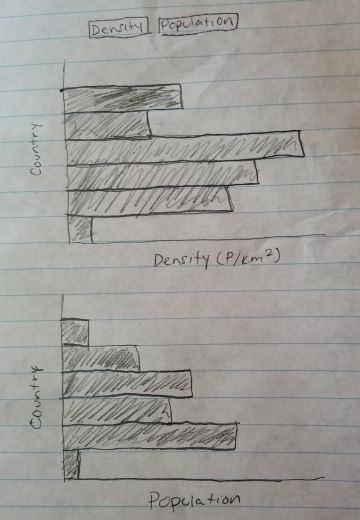

I honed in on a dataset that can be found on Kaggle. The dataset I came up with a visualization that would allow to see the comparisons between the countries' density and population. A horizontal bar chart was one of the main types of visualizations I hoped to use as it is simple to see comparisons between what is being compared. I planned on implementing buttons to switch between the density chart and the population chart to see the comparison between the countries' density and population. I chose to create a horizontal bar chart rather than a vertcial bar chart because it's easier to visualize and having the countries on the y axis makes it easier to read, without having the country's names be diagonal or cut off. The goal of these visualizations was to compare the different countries' densities and populations. A high population does not necessarily mean a high density, for example, United States has a higher population that the United Kingdom but has a lower density than the United Kingdom.
